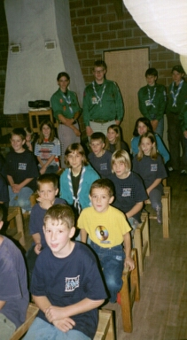
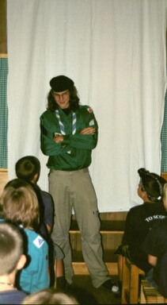

In acht Tagen um die Welt
Eine Reise der etwas anderen Art unternahmen in der ersten Herbstferienwoche die Bienli und Wölfe der Pfadiabeilung AL4 Buchs.

H.S - Was Passepartout und Phileas Fogg in Jules Vernes' Roman einst zu zweit in 80 Tagen versuchten, schaffte die zehnfache Anzahl Wölfe und Bienli in einem zehntel der Zeit.

Am 29.9.01 versammelten sich alle Lagerteilnehmer am Buchser Bahnhof wo sie ganz nach Pfadfindermanier losbrüllten. Vor ihnen lag eine Woche, deren genauer Inhalt jedoch nur den Leitern bekannt war. Mit einem lachenden und einem weinenden Auge gaben die Eltern ihre "Kleinen" frei damit sie sich ins Abenteuer stürzen konnten.
Das Lager wurde im Kanton Zürich, genauer in Weisslingen durchgeführt. Jeden Abend setzten sich alle Passagiere mitsamt der Crew in das Flugzeug der Pfadiairlines, welches verdächtig nach Aufenthaltsraum aussah, und flog in ein fremdes Land. Als ersten Eindruck wurden während dem Flug Dias von der Reisedestination gezeigt und das Programm des darauf folgenden Tages wurde ganz im Rahmen des jeweiligen Landes durchgeführt. Bis am Mittwoch verlief die Reise problemlos, doch auf dem nächsten Flug dürfte das Flugzeug wohl mit einem Zebra zusammengestossen sein denn es musste in der Wüsten notlanden und die Besatzung verliess fluchtartig das Flugzeug durch den Notausgang. Ein ausgedehnter Marsch durch unbekanntes und unkartografiertes Gebiet war die Folge dieses Unglücks.
Doch am trotz aller Strapazen fanden sich am 6.10.01 alle Teilnehmer wieder gesund und um einige Erfahrungen reicher am Buchser Bahnhof ein um wieder einige Zeit in der Schweiz zu verbringen bevor sie wieder mit Pfadiairlines auf Entdeckungsreise gehen.
Kermit